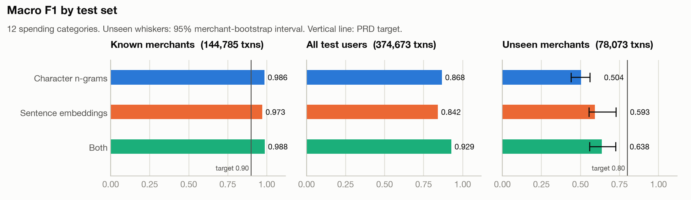
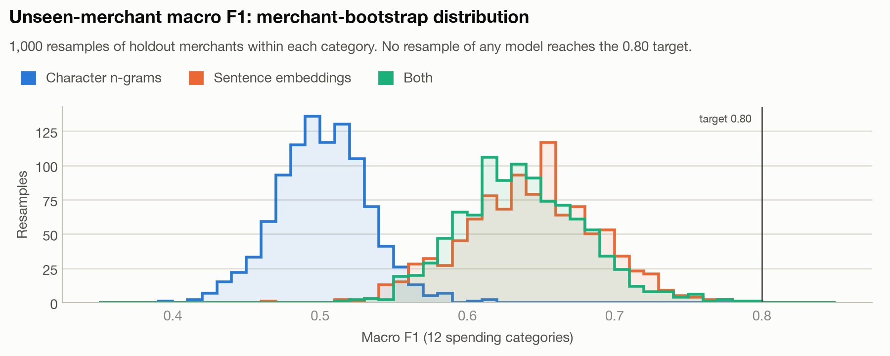
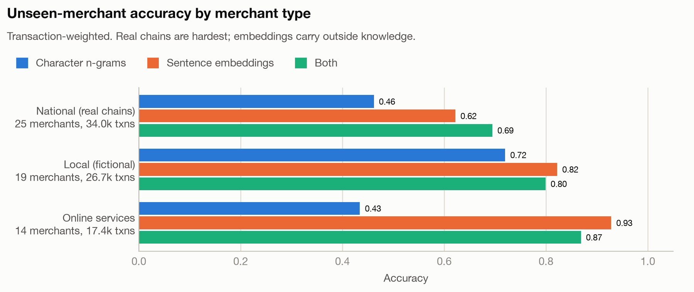
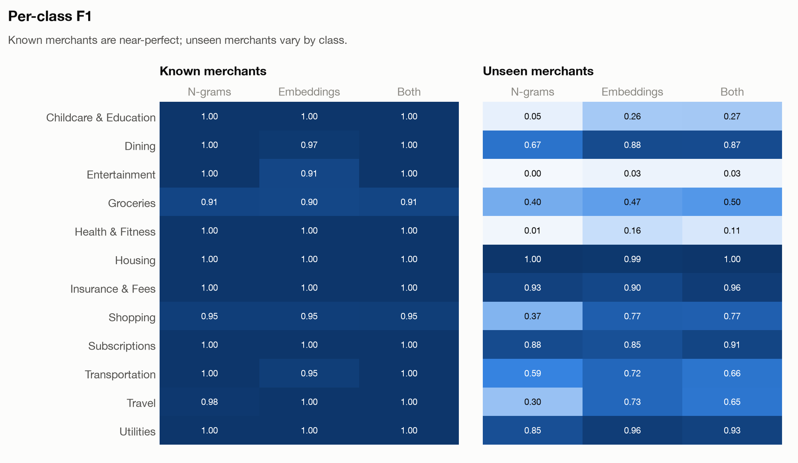
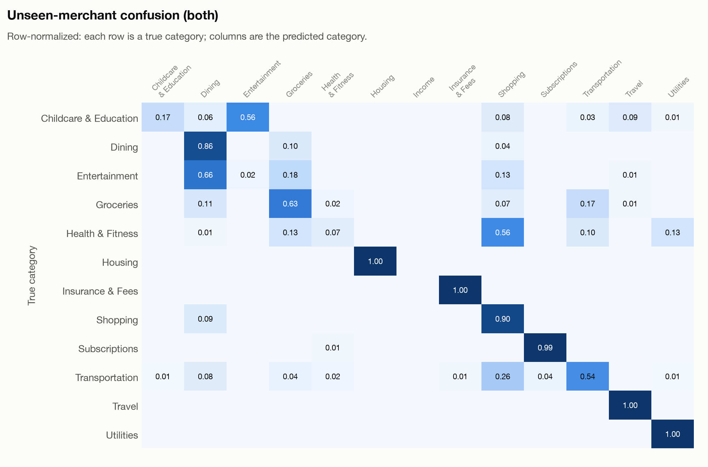
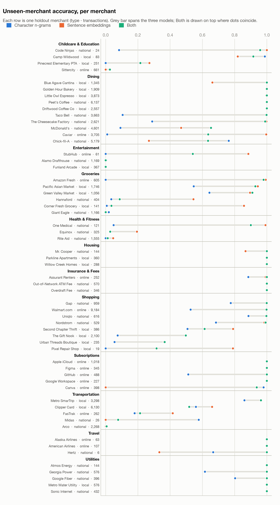
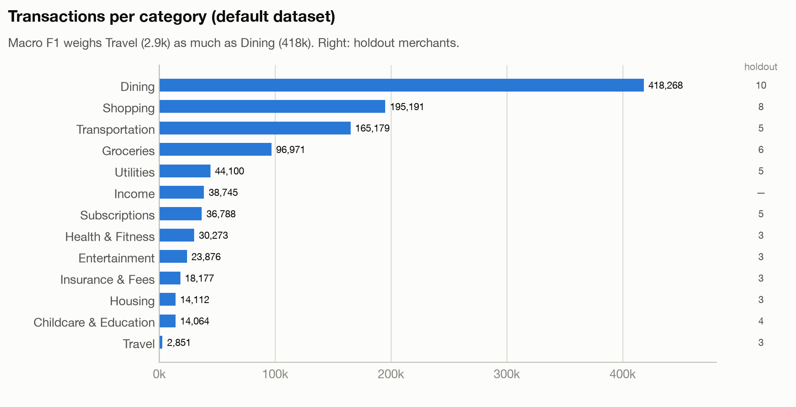

FR-3 categorization feasibility
Logistic regression on the default synthetic dataset. Macro F1 over the 12 spending categories; Income excluded.
Known merchants (FR-3)
0.988
✓ target ≥ 0.90
Unseen merchants (FR-4)
0.638
✗ target ≥ 0.80 · 95% interval 0.56–0.73
All test users
0.929
realistic mix of known and new merchants; no target
Headline
| Features | Known merchants | All test users | Unseen merchants | Unseen 95% interval |
|---|---|---|---|---|
| Character n-grams | 0.986 | 0.868 | 0.504 | 0.440–0.562 |
| Sentence embeddings | 0.973 | 0.842 | 0.593 | 0.554–0.728 |
| Both | 0.988 | 0.929 | 0.638 | 0.559–0.726 |

Is the unseen-merchant gap real?

Where unseen merchants fail



Largest unseen-merchant errors (both)
| Merchant | True | Predicted | Transactions |
|---|---|---|---|
| Arco | Transportation | Shopping | 2,255 |
| Chick-fil-A | Dining | Groceries | 1,876 |
| McDonald's | Dining | Groceries | 1,592 |
| Caviar | Dining | Shopping | 1,328 |
| Rite Aid | Health & Fitness | Shopping | 1,107 |
| The Gift Nook | Shopping | Dining | 1,047 |
| Clipper Card | Transportation | Dining | 1,007 |
| Alamo Drafthouse | Entertainment | Dining | 986 |
| Giant Eagle | Groceries | Transportation | 841 |
| Clipper Card | Transportation | Shopping | 822 |
| Sittercity | Childcare & Education | Entertainment | 567 |
| Clipper Card | Transportation | Groceries | 519 |

Dataset
